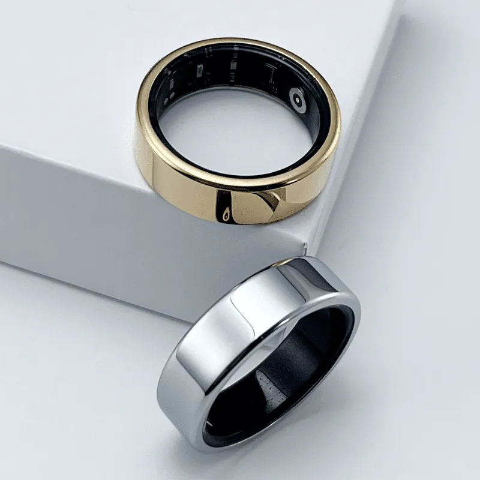
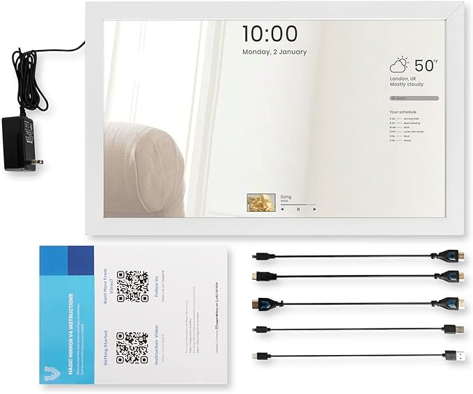

SMART RING + APPLE WATCH
Availability
8 days to ship
What the technology does
Using PPG technology, wearing this ring detects health statistics
like your sleep, temperature, heart rate, activity levels, blood
oxygen levels, and more. You can read these statistics through a
provided apple health integration.
What I want to do with the technology
Because you can essentially determine someone's mood
based on these health stats, I would want to make an apple
watch app with a widget feature that pairs with the smart ring
where you can track your mood at anytime. You could also add
friends on the app, and see their moods, so you can help out
your friends if they're ever stressed or not feeling great.
Additionally, I would want to implement some interactions using
apple watch's new assistive touch feature.
SMART RING + MOBILE APP
Availability
8 days to ship
What the technology does
Using PPG technology, wearing this ring detects health statistics
like your sleep, temperature, heart rate, activity levels, blood
oxygen levels, and more. You can read these statistics through a
provided apple health integration.
What I want to do with the technology
Because you can essentially determine someone's mood based
on these health stats, I would want to make a mobile app
that pairs with the smart ring where you can track your health,
mood, and stress levels. It could provide you with certain tips
or exercises to help manage your emotions, like a breathing
exercise if it detects high stress levels. You could also add
friends to your network and send them encouraging messages
throughout the day if you want.

SMART MIRROR TO-DO LIST
Availability
2 days to ship with Prime
What the technology does
Using a Raspberry Pi & an internal LCD screen, this
mirror can be customized for any kind of project you
would want to create with it.
What I want to do with the technology
I would want to make a to-do list that would be
interactive on this mirror. I always put sticky
notes on my mirror when I need to remember things
later, and this would make that process simpler.
©Image 1 is curtesy of Gloring, Image 2 is curtesy of Amazon